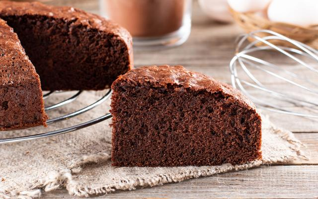

Bolo de Chocolate

Ingredientes
- 3 ovos
- 1 e 1/2 xícara de açúcar
- 2 xícaras de farinha de trigo
- 1 xícara (chá) de chocolate em pó ou achocolatado
- 1/2 xícara (chá) de óleo
- 1 colher (sopa) de fermento em pó
- 1 pitada de sal
- 1 xícara (chá) de água quente
Modo de Preparo
- Em um liquidificador, bata os ovos, o açúcar, o óleo, o achocolatado e a farinha de trigo.
- Despeje a massa em uma tigela e adicione a água quente e o fermento, misturando bem.
- Despeje a massa em uma forma untada e asse em forno médio-alto (200° C), preaquecido, por 40 minutos.
- Desenforme ainda quente.